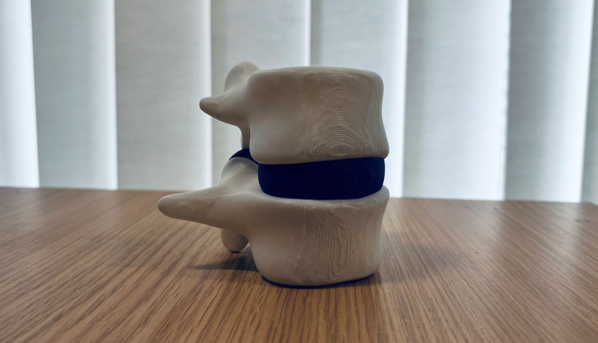

Learning Anatomy with Tangible AR
Paper
Investigating the Benefits of Physical Models for Anatomical Education in Augmented Reality
Matthew Wragg, University of BathRaj Sengupta, Royal National Hospital for Rheumatic Diseases, Bath
Dario Cazzola, University of Bath
Jason Alexander, University of Bath
Presented at CHI 2025: Proceedings of the 2025 CHI Conference on Human Factors in Computing Systems
Abstract
Historically, anatomical education has utilised physical models; researchers are now looking to Augmented Reality (AR) to deliver more engaging learning experiences. While there are clear educational advantages to AR, most systems lack the cognitive benefits afforded by physical models. Our work explores the potential of combining physical anatomical models and AR. We first present a design space exploring the interplay between the two. From this, we created a tangible AR system utilising a physical vertebrae model for learning spinal anatomy and axial spondyloarthritis progression. We conducted a study (n=39) to evaluate its benefits for knowledge improvement and retention, compared with a virtual AR and screen-based version. We found no difference in learning outcomes, however, the physical model improved participants' learning experience. We then conducted an expert evaluation with clinicians to explore opportunities for using tangible AR in clinical practice. Results highlight potential benefits for patient understanding, and challenges surrounding accessibility.Gallery

